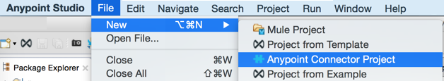
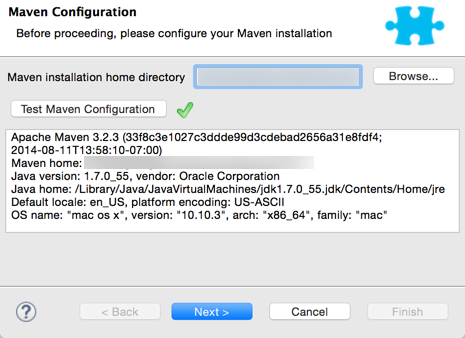
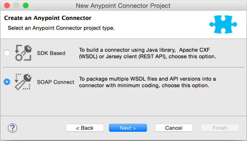
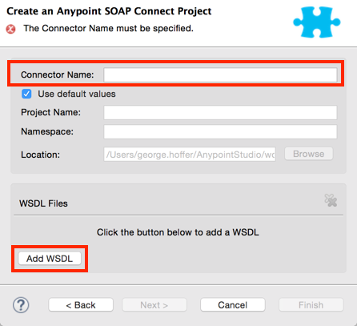
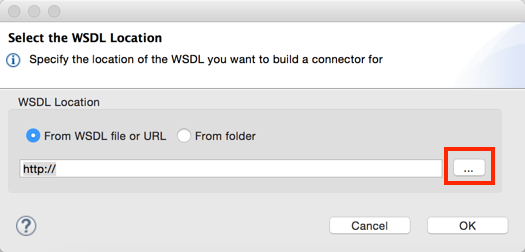
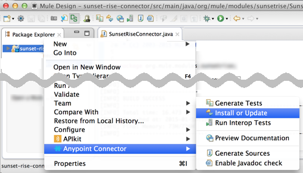

Creating a SOAP Connector
The SOAP Connect wizard generates a WSDL-based connector that receives and responds XML elements. This kind of connector only runs on Mule versions 3.7 or above.
Create a SOAP Project
-
Install the DevKit plugin in Anypoint Studio.
-
In Anypoint Studio, click File > New > Anypoint Connector Project or right-click your project name in Package Explorer and click New > Anypoint Connector Project:
 -
If Maven is not registered in Studio, this screen appears. Browse to the Maven directory location to locate where you installed Maven, and click Test Maven Configuration:
 -
Select the connector project type you want to create. In this case, select SOAP Connect:
 -
Specify the name of your connector and click Add WSDL:
 -
Select whether to take the WSDL from a file or a folder. The location can be either on your computer or at a URL. Click
…to browse to a WSDL location on your computer. Note: If you select a folder, DevKit loads all the WSDLs in the folder. After specifying a file or folder, click OK. -
To add another WSDL, click Add WSDL. When done adding WSDLs, click Finish. WSDLs are evaluated in the order you specify. Studio aggregates the WSDLs and builds a connector.
-
If needed, add code to your connector.
-
When you are ready to test your connector in a Mule Project, click Anypoint Connector > Install or Update. Note: You can test a connector immediately after the connector creates.
 -
After your connector installs, create a test project that uses your connector by clicking File > New > Mule Project.
-
Click Message Flow at the lower left of the canvas, search for http, and drag the HTTP connector to the canvas.
-
Click the HTTP Connector and in the Connector Configuration field, click the green Plus sign. From the new HTTP Listener Configuration window, click OK to accept the default settings.
-
Search for sunset and drag the SunsetRise connector to the canvas:

-
Click the SunsetRise connector icon to configure the fields. In the Connector Configuration field, click the green Plus sign.
Note: SOAP Connect doesn’t support RCP-encoded WSDLs or multi-part messages.
SOAP Connector Example Default Code
After creating a SOAP connector, DevKit creates these classes:
-
@Connector class in src/main/java > org.mule.modules.<connector_name>. This class contains the @Config annotation and methods for getConfig() and setConfig().
-
@WsdlProvider class in src/main/java > org.mule.modules.<connector_name>.config. This class contains annotations for @WsdlServiceRetriever and @WsdlServiceEndpoint. The retriever annotation retrieves the full set of WSDL files. The service endpoint annotation provides a way to resolve endpoints across the one or more WSDLs.
@Connector Class Default Code Example
package org.mule.modules.sunsetrise;
import org.mule.api.annotations.Config;
import org.mule.api.annotations.Connector;
import org.mule.modules.sunsetrise.config.ConnectorConfig;
@Connector(name="sunset-rise", friendlyName="SunsetRise", minMuleVersion = "3.7")
public class SunsetRiseConnector {
@Config
ConnectorConfig config;
public ConnectorConfig getConfig() {
return config;
}
public void setConfig(ConnectorConfig config) {
this.config = config;
}
}@WsdlProvider Class Default Code Example
package org.mule.modules.sunsetrise.config;
import java.util.ArrayList;
import java.util.List;
import org.mule.api.annotations.components.WsdlProvider;
import org.mule.api.annotations.ws.WsdlServiceEndpoint;
import org.mule.api.annotations.ws.WsdlServiceRetriever;
import org.mule.devkit.api.ws.definition.DefaultServiceDefinition;
import org.mule.devkit.api.ws.definition.ServiceDefinition;
@WsdlProvider(friendlyName = "Configuration")
public class ConnectorConfig {
@WsdlServiceRetriever
public List<ServiceDefinition> getServiceDefinitions() {
final List<ServiceDefinition> serviceDefinitions = new ArrayList<ServiceDefinition>();
serviceDefinitions.add(new DefaultServiceDefinition(
"SunSetRiseService_SunSetRiseServiceSoap",
"sunsetriseservice (SunSetRiseServiceSoap)",
"wsdl/sunsetriseservice.wsdl",
"SunSetRiseService",
"SunSetRiseServiceSoap"));
serviceDefinitions.add(new DefaultServiceDefinition(
"SunSetRiseService_SunSetRiseServiceSoap12",
"sunsetriseservice (SunSetRiseServiceSoap12)",
"wsdl/sunsetriseservice.wsdl",
"SunSetRiseService",
"SunSetRiseServiceSoap12"));
serviceDefinitions.add(new DefaultServiceDefinition(
"SunSetRiseService_SunSetRiseServiceHttpPost",
"sunsetriseservice (SunSetRiseServiceHttpPost)",
"wsdl/sunsetriseservice.wsdl",
"SunSetRiseService",
"SunSetRiseServiceHttpPost"));
serviceDefinitions.add(new DefaultServiceDefinition(
"SunSetRiseService_SunSetRiseServiceHttpGet",
"sunsetriseservice (SunSetRiseServiceHttpGet)",
"wsdl/sunsetriseservice.wsdl",
"SunSetRiseService",
"SunSetRiseServiceHttpGet"));
return serviceDefinitions;
}
@WsdlServiceEndpoint
public String getServiceEndpoint(ServiceDefinition definition) {
String result;
final String id = definition.getId();
switch(id){
case "SunSetRiseService_SunSetRiseServiceSoap": {
result = "http://www.webservicex.net/sunsetriseservice.asmx";
break;
}
case "SunSetRiseService_SunSetRiseServiceSoap12": {
result = "http://www.webservicex.net/sunsetriseservice.asmx";
break;
}
case "SunSetRiseService_SunSetRiseServiceHttpPost": {
result = "http://www.webservicex.net/sunsetriseservice.asmx";
break;
}
case "SunSetRiseService_SunSetRiseServiceHttpGet": {
result = "http://www.webservicex.net/sunsetriseservice.asmx";
break;
}
default: {
throw new IllegalArgumentException(id + " endpoint could not be resolved.");
}
}
return result;
}
}Coding With @WsdlProvider
This section provides additional information about using @WsdlProvider in your SOAP connector.
Topics:
Mandatory Annotations Within @WsdlProvider
Two annotations must be written included within a @WsdlProvider annotation, the annotations for @WsdlServiceRetriever and @WsdlServiceEndpoint.
The following sample shows how to code the @Connector class:
@Connector(name="tshirt", friendlyName="T-Shirt")
public class WsdlConnector {
@Config
private TShirtWSDLProvider wsdlProvider;
//setters and getters
}In the @WSDLProvider strategy, add methods for providing an abstraction of the set of WSDL files and a second one to resolve an address.
@WsdlProvider(friendlyName = "Tshirt configuration")
public class TShirtWSDLProvider {
@WsdlServiceRetriever //[MANDATORY], represents (a)
public List<ServiceDefinition> getDefinitions() { // Match exact signature
List<ServiceDefinition> serviceDefinitions = new ArrayList<ServiceDefinition>();
serviceDefinitions.add(new DefaultServiceDefinition("Tshirt_ID","T-Shirt","tshirt.wsdl",null, null));
//other valid ServiceDefinition could be
// serviceDefinitions.add(new DefaultServiceDefinition("Tshirt_ID","T-Shirt",new URL("http://..."),null, null));
serviceDefinitions.add(new ...);
return serviceDefinitions;
}
@WsdlServiceEndpoint //[MANDATORY], represents (b)
public String resolveAddress(ServiceDefinition serviceDefinition){ // Match exact signature
StringBuilder sb = new StringBuilder();
sb.append("http://myinstance.tshirt.com/incident.do?WSDL")
.append("/service=").append(serviceDefinition.getService().get())
.append("/v23.0");
return sb.toString();
}
}The @WsdlServiceRetriever annotation retrieves the full set of WSDL files, while the @WsdlServiceEndpoint resolves service addresses and returns a list of WSDL files that do not hit the same endpoint.
Optional Attributes and Annotations Within @WsdlServiceRetriever
In the following example, the generation of this connector has three types of keys: Tshirt_ID#OrderTshirt, Tshirt_ID#ListInventory and Tshirt_ID#TrackOrder. If for any reason the # character separator is not useful for a given SOAP API domain (for example, # could be a valid string name) you can overwrite it by adding the following optional "keySeparator" attribute at @WsdlServiceDefinitionRetriever:
@WsdlProvider(friendlyName = "Tshirt configuration")
public class TShirtWSDLProvider {
@WsdlServiceRetriever(keySeparator = "#!@") //[MANDATORY]
public List<ServiceDefinition> getDefinitions() {...}
@WsdlServiceEndpoint //[MANDATORY]
public String resolveAddress(ServiceDefinition serviceDefinition){...}
}This new method generates the keys in the following format: Tshirt_ID#Unable to render embedded object: File (@OrderTshirt, Tshirt_ID#) not found.
Specifying Multiple WSDL Providers
For some scenarios it might be useful to have more than one @WsdlProvider to either support multiple WSDLs versioning, or grouping them by some criteria.
To specify multiple providers:
-
Use an abstract class and interface as a @ConnectionStrategy:
@Connector(name="tshirt", friendlyName="T-Shirt") public class WsdlConnector { @ConnectionStrategy private AbstractTShirtWSDLProvider wsdlProvider; //setters and getters } -
Give the abstract class a behavior:
public abstract class AbstractTShirtWSDLProvider { @Configurable @Default("http://myinstance.tshirt.com/incident.do?WSDL") private String address; @WsdlServiceEndpoint //[MANDATORY] public String resolveAddress(ServiceDefinition serviceDefinition){ // Match exact signature StringBuilder sb = new StringBuilder(); sb.append(address) .append("/service=").append(serviceDefinition.getService().get()) .append("/v23.0"); return sb.toString(); } //setters and getters } -
Code a first provider implementation of the abstract class, for example, for women’s Tshirts:
@WsdlProvider(configElementName = "config-woman", friendlyName = "Tshirt for woman configuration") public class TShirtWSDLProvider extends AbstractTShirtWSDLProvider { @WsdlServiceRetriever //[MANDATORY] public List<ServiceDefinition> getDefinitions() { // Match exact signature List<ServiceDefinition> serviceDefinitions = new ArrayList<ServiceDefinition>(); serviceDefinitions.add(new DefaultServiceDefinition("Woman-Tshirt_ID","Woman-T-Shirt","woman-tshirt.wsdl",null, null)); return serviceDefinitions; } } -
Code the next provider implementation of the abstract class, in this case, for men’s Tshirts:
@WsdlProvider(configElementName = "config-man", friendlyName = "Tshirt for male configuration") public class TShirtWSDLProvider extends AbstractTShirtWSDLProvider { @WsdlServiceRetriever //[MANDATORY] public List<ServiceDefinition> getDefinitions() { // Match exact signature List<ServiceDefinition> serviceDefinitions = new ArrayList<ServiceDefinition>(); serviceDefinitions.add(new DefaultServiceDefinition("Male-Tshirt_ID","Male-T-Shirt","male-tshirt.wsdl",null, null)); return serviceDefinitions; } }Both steps 3 and 4 generate two global elements, one for each type of configuration as both of them represents the same type derived from the @ConnectionStrategy AbstractTShirtWSDLProvider , where each subclass is only responsible for returning the concrete ServiceDefinitions, but they rely on the way of resolving addresses on the abstract class (see the @WsdlServiceEndpoint on AbstractTShirtWSDLProvider).
Multiple Level DataSense for WSDL Provider
When implementing a WSDL-based connector using a @WsdProvider, the developer provides one or many service definitions retrieved from one or many WSLDProvider strategies. For each of this ServiceDefinitions, the connector presents multiple operations.
Using this connector, then, implies that the user selects a Service and an Operation to be invoked.
Currently, this selection is made with a single hashed key, for example ServiceOne||OperationTwo could be a key selectable via a single drop-down in Studio.
Given this scenario, we provide a simpler, more descriptive way for the user to select the Service-Operation combination, using two drop-downs if many Services are defined, and a single drop-down when a single Service exists and only the operation must be specified.
Glossary
ServiceDefinition: A representation of a WSDL file that can be accessible either locally (for example: within a connector’s JAR) or remote (for example: URLs), that are used for runtime (Mule ESB) or design time (Anypoint Studio) purposes.
ServiceDefinitionRetriever: Responsible of returning a collection of WSDL files modeled through ServiceDefinition
keySeparator: One or more characters that work as a delimiter between Service and Operation in a compound service-operation key, present in the app XML once the keys are selected.
keyLabels: Names to be used used as labels for the drop-downs shown in Studio.
Possible Scenarios
| Case Id | Dropdowns | Services Defined | Retriever Return Type | keySeparator | keyLabels |
|---|---|---|---|---|---|
A |
2 |
Many |
List<ServiceDefinition> |
Optional |
Default |
B |
2 |
Many |
List<ServiceDefinition> |
Optional |
Override: 2 required |
C |
1 |
One |
ServiceDefinition |
No Override |
Override: 1 required |
Case A: Multi Service Example - All Defaults
In this case, we have multiple Services to be declared from where can choose to invoke an operation provided by that Service. Then, we return a List of ServiceDefinitions, using the default labels for the drop-downs:
-
WSDL: for the drop-down containing the services displayNames
-
Operation: for the second drop-down, showing all the operation exposed by the service
@WsdlServiceDefinitionRetriever
public List<ServiceDefinition> getDefinitions() {
List<ServiceDefinition> serviceDefinitions = new ArrayList<ServiceDefinition>();
serviceDefinitions.add(new DefaultServiceDefinition("ServiceId_1", "ServiceDisplayName First",
"https://www.sandbox.service.com/wsdl/MySampleWsdl.wsdl", "service-name", "service-port"));
serviceDefinitions.add(new DefaultServiceDefinition("ServiceId_2", "ServiceDisplayName Second",
"https://www.sandbox.service.com/wsdl/MyOtherWsdl.wsdl", "different-service-name", "service-port"));
return serviceDefinitions;
}Case B: Multi Service Example - Custom Labels
Now, what happens if the default labels does not make sense for my domain? Then the developer is enabled to declared two labels in the keyLabels attribute.
The labels replace, in order, the 'WSDL' and 'Operation' labels previously described.
What happens if the WSDL cause IDs to clash with the default separator '||'? If this is the case, you can Override the default keySeparator as shown in the code below. This only reflects in the key written in the app XML, and have no effect on the drop-downs.
@WsdlServiceDefinitionRetriever(keySeparator="@@", keyLabels={"Table", "Module"})
public List<ServiceDefinition> getDefinitions() {
List<ServiceDefinition> serviceDefinitions = new ArrayList<ServiceDefinition>();
serviceDefinitions.add(new DefaultServiceDefinition("ServiceId_1", "ServiceDisplayName First",
"https://www.sandbox.service.com/wsdl/MySampleWsdl.wsdl",
"service-name", "service-port"););
serviceDefinitions.add(new DefaultServiceDefinition("ServiceId_2", "ServiceDisplayName Second",
"https://www.sandbox.service.com/wsdl/MyOtherWsdl.wsdl",
"different-service-name", "service-port"););
return serviceDefinitions;
}Case C: Single Service Example - Single Dropdown
For simpler cases, where we only need a single ServiceDefinition, then the return type of the ServiceDefinitionRetriever must be modified for a single ServiceDefinition instead of using a List.
Returning a single ServiceDefinition impacts what keys used, because only the Operation drop-down is shown, without a visible WSDL drop-down.
Also, the key is now a single operation-id key, instead of a composed key split by a separator. This is not the same as returning a single-element List because, in this single-element-list case, two drop-downs are shown.
@WsdlServiceDefinitionRetriever(keyLabels={"Operation"})
public ServiceDefinition getDefinitions() {
return new DefaultServiceDefinition("ServiceId", "ServiceDisplayName",
"https://www.sandbox.service.com/wsdl/MySampleWsdl.wsdl", "service-name", "service-port");
}Multiple WSLDProviders Restriction
When declaring multiple WSDLProvider strategies, all must be consistent in the ServiceDefinitionRetriever declaration.
This includes:
-
Return type must be the same for all the strategies, that is either all return List<ServiceDefinition> or all return ServiceDefinition.
-
If overrided labels must be the same for all the retrievers.
-
If overrided keySeparator must be the same for all the retrievers.
Authentication Options
By default no authentication mechanism is generated.
In the last page of the wizard you can specify the authentication type you want for the connector:
The options modify the generated code in the @WsdlProvider annotated class.
The HTTP Basic provides username and password security for a connector. WS-Security provides a security token for improved security for a connector.
After you create a connector project, changing security from None to HTTP Basic or WS-Security requires adding or removing code from the @WsdlProvider class. If you need to do so, create a new project with the preferred security option, and add or remove the code to or from your @ WsdlProvider class.
An example of the code for HTTP Basic is as follows–by comparing this code to that of the previous @WsdlProvider class without security, one can see the extent of the changes.
package org.mule.modules.water.config;
import java.util.ArrayList;
import java.util.List;
import org.mule.api.annotations.ws.WsdlTransportRetriever;
import org.mule.devkit.api.ws.transport.WsdlTransport;
import org.mule.devkit.api.ws.transport.HttpBasicWsdlTransport;
import org.mule.api.annotations.Configurable;
import org.mule.api.annotations.display.Password;
import org.mule.api.annotations.display.Placement;
import org.mule.api.annotations.components.WsdlProvider;
import org.mule.api.annotations.ws.WsdlServiceEndpoint;
import org.mule.api.annotations.ws.WsdlServiceRetriever;
import org.mule.devkit.api.ws.definition.DefaultServiceDefinition;
import org.mule.devkit.api.ws.definition.ServiceDefinition;
import org.mule.api.annotations.param.Optional;
@WsdlProvider(friendlyName = "Configuration")
public class ConnectorConfig {
@Configurable
@Placement(order = 1)
private String username;
@Configurable
@Placement(order = 2)
@Password
@Optional
private String password;
@WsdlServiceRetriever
public List<ServiceDefinition> getServiceDefinitions() {
final List<ServiceDefinition> serviceDefinitions = new ArrayList<ServiceDefinition>();
serviceDefinitions.add(new DefaultServiceDefinition(
"SunSetRiseService_SunSetRiseServiceSoap",
"sunsetriseservice (SunSetRiseServiceSoap)",
"wsdl/sunsetriseservice.wsdl",
"SunSetRiseService",
"SunSetRiseServiceSoap"));
serviceDefinitions.add(new DefaultServiceDefinition(
"SunSetRiseService_SunSetRiseServiceSoap12",
"sunsetriseservice (SunSetRiseServiceSoap12)",
"wsdl/sunsetriseservice.wsdl",
"SunSetRiseService",
"SunSetRiseServiceSoap12"));
serviceDefinitions.add(new DefaultServiceDefinition(
"SunSetRiseService_SunSetRiseServiceHttpPost",
"sunsetriseservice (SunSetRiseServiceHttpPost)",
"wsdl/sunsetriseservice.wsdl",
"SunSetRiseService",
"SunSetRiseServiceHttpPost"));
serviceDefinitions.add(new DefaultServiceDefinition(
"SunSetRiseService_SunSetRiseServiceHttpGet",
"sunsetriseservice (SunSetRiseServiceHttpGet)",
"wsdl/sunsetriseservice.wsdl",
"SunSetRiseService",
"SunSetRiseServiceHttpGet"));
return serviceDefinitions;
}
@WsdlServiceEndpoint
public String getServiceEndpoint(ServiceDefinition definition) {
String result;
final String id = definition.getId();
switch(id){
case "SunSetRiseService_SunSetRiseServiceSoap": {
result = "http://www.webservicex.net/sunsetriseservice.asmx";
break;
}
case "SunSetRiseService_SunSetRiseServiceSoap12": {
result = "http://www.webservicex.net/sunsetriseservice.asmx";
break;
}
case "SunSetRiseService_SunSetRiseServiceHttpPost": {
result = "http://www.webservicex.net/sunsetriseservice.asmx";
break;
}
case "SunSetRiseService_SunSetRiseServiceHttpGet": {
result = "http://www.webservicex.net/sunsetriseservice.asmx";
break;
}
default: {
throw new IllegalArgumentException(id + " endpoint could not be resolved.");
}
}
return result;
}
@WsdlTransportRetriever
public WsdlTransport resolveTransport(ServiceDefinition serviceDefinition) {
return new HttpBasicWsdlTransport(getUsername(), getPassword());
}
public String getUsername() {
return username;
}
public void setUsername(String username) {
this.username = username;
}
public String getPassword() {
return password;
}
public void setPassword(String password) {
this.password = password;
}
}WSDL and Envelope Authentication
Despite having a concrete way to hit a SOAP API through the invoke operation, a connector needs a way to sign the envelopes to authenticate against the API. DevKit provides these mechanisms:
-
Secure username token and
-
Security timestamp
Sign envelopes by returning a collection in an annotated method with @WsdlSecurityStrategyResolver:
@WsdlProvider(friendlyName = "Tshirt configuration")
public class TShirtWSDLProvider {
@WsdlServiceDefinitionRetriever //[MANDATORY]
public List<ServiceDefinition> getDefinitions() {...}
@WsdlServiceEndpoint //[MANDATORY]
public String resolveAddress(ServiceDefinition serviceDefinition){...}
@WsdlSecurity //[OPTIONAL]
// Match exact signature
public List<WsdlSecurityStrategy> getStrategies(ServiceDefinition serviceDefinition){
List<WsdlSecurityStrategy>;
strategies = new ArrayList<WsdlSecurityStrategy>();
// (a) Strategy-based in security username token profile
strategies.add(new WsdlUsernameToken(username, password,
passwordType, addNonce, addCreated));
// (b) Strategy-based in security timestamp
strategies.add(new WsdlTimestamp(1000));
return strategies;
}
}The key part about this strategies, within @WsdlSecurity, is that a connector developer must rely on the @Configurables already in place. This means that if it want to use username token profile, then it must have a way to parametrize the connector with username, password, etc. Once the concrete instances of @WsdlSecurityStrategy initialize, DevKit takes care of the rest, parametrizing each to the underlying engine in the Web Service Consumer.
Transport Authentication with HTTP Basic Authentication
The previous section discussed signing envelopes, but there’s a way to customize the underlying transport used to send the envelope, allowing among many use cases by enabling HTTP Basic Authentication.
The way to achieve this is returning a concrete WsdlTransport object @WsdlTransportRetriever as follows:
@WsdlProvider(friendlyName = "Tshirt configuration")
public class TShirtWSDLProvider {
@WsdlServiceRetriever //[MANDATORY]
public List<ServiceDefinition> getDefinitions() {...}
@WsdlServiceEndpoint //[MANDATORY]
public String resolveAddress(ServiceDefinition serviceDefinition) {...}
@WsdlTransportRetriever //[OPTIONAL]
public WsdlTransport resolveTransport(ServiceDefinition serviceDefinition) {
return new HttpBasicWsdlTransport("PROVIDE USERNAME", "PROVIDE PASSWORD");
}
}A more advanced use case is when you need to configure the whole underlaying transport such as with proxies, SSL, sockets options, and more. This uses an HttpRequesterConfig element. For those advanced scenarios, you can do the following:
@WsdlProvider(friendlyName = "Tshirt configuration advance")
public class TShirtWSDLProvider {
@Configurable
//Let DevKit take care of the UI and initialization from a bean
private HttpRequesterConfig requesterConfig;
@WsdlServiceRetriever //[MANDATORY]
public List<ServiceDefinition> getDefinitions() {...}
@WsdlServiceEndpoint //[MANDATORY]
public String resolveAddress(ServiceDefinition serviceDefinition){...}
@WsdlTransportRetriever //[OPTIONAL]
public WsdlTransport resolveTransport(ServiceDefinition serviceDefinition){
return new HttpRequesterConfigWsdlTransport(getRequesterConfig());
}
public HttpRequesterConfig getRequesterConfig() {
return requesterConfig;
}
public void setRequesterConfig(HttpRequesterConfig requesterConfig) {
this.requesterConfig = requesterConfig;
}
}Envelope Headers
Some APIs need to send custom headers for each envelope that’s sent. DevKit provides a hook to tune headers before executing an operation. The above code shows how to achieve this in the cookHeaders method. Take care to secure this XML parsing code against XXE attacks by following the OWASP guidance.
@WsdlProvider(friendlyName = "Tshirt configuration")
public class TShirtWSDLProvider {
@WsdlServiceRetriever //[MANDATORY]
public List<ServiceDefinition> getDefinitions() {...}
@WsdlServiceEndpoint //[MANDATORY]
public String resolveAddress(ServiceDefinition serviceDefinition){...}
@WsdlHeaders
public List<Document> cookHeaders(ServiceDefinition serviceDefinition,
String operationName)
{
List<Document> result= new LinkedList<Document>();
DocumentBuilderFactory dbf = DocumentBuilderFactory.newInstance();
DocumentBuilder builder = dbf.newDocumentBuilder();
result.add(getDocument("header1", "item", "myCustomAttr",
"Some fancy value attr for op["+operationName+"]",
"Text within element", builder));
result.add(getDocument("header2", "item2", "myCustomAttr2",
"Some fancy value attr2 for op["+operationName+"]",
"Text within element2", builder));
return result;
}
private Document getDocument(String rootStringValue, String itemStringValue,
String attrStringNameValue, String attrStringValue,
String textStringValue, DocumentBuilder builder)
{
Document doc = builder.newDocument();
// Create the root element node
Element element = doc.createElement(rootStringValue);
element.setAttributeNS("http://www.w3.org/2000/xmlns/",
"xmlns:ns2", "http://someurl");
doc.appendChild(element);
// Add element after the first child of the root element
Element itemElement = doc.createElement(itemStringValue);
element.appendChild(itemElement);
// Add an attribute to the node
itemElement.setAttribute(attrStringNameValue, attrStringValue);
// Create text for the node
itemElement.insertBefore(doc.createTextNode(textStringValue),
itemElement.getLastChild());
return doc;
}
}The output from the previous headers are within the soap:Header element in the next envelope:
Snippet of the envelope:
<soap:Envelope xmlns:soap="http://schemas.xmlsoap.org/soap/envelope/">
<soap:Header>
<header1 xmlns:ns2="http://someurl">
<item myCustomAttr="some fancy value attr for op[SELECTED_OPERATION_NAME]">Text within element</item>
</header1>
<header2 xmlns:ns2="http://someurl">
<item2 myCustomAttr2="some fancy value attr2 for op[SELECTED_OPERATION_NAME]">text within element2</item2>
</header2>
</soap:Header>
<soap:Body>
...
</soap:Body>
</soap:Envelope>